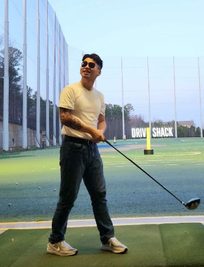

Introduction
Personal Background: I live in Matthews, NC. I was originally a business major, but decided to change my major after I discovered my interest in computers over quarantine.
Professional Background: I am an IT intern (remote) for a small pet store in Minnesota, and before that I worked at a sushi restaurant.
Academic Background: Went to elementary school in China, went to middle and high school in Winston-Salem. 80% done with a business major before switching to Computer Science. Now almost finished with my CS degree at UNCC.
Background in this Subject: Most of my computer science knowledge came from the CCI program here at UNCC, which sparked my interest in coding projects outside of school.
Primary Computer Platform: I built my own PC:
- CPU: AMD Ryzen 7 9700X 8-Core
- GPU: RX 7900 XT
- Monitor 1: Sceptre Curved 24.5 inch 240hz
- Monitor 2 & 3: Acer 21.5 inch 75hz
- Keyboard: Redragon K550
- Mouse: Pwnage Ultra Custom Wireless Symm 2 & Logitech G Superlight & glorious model O
- Mousepad: HyperX mousepad 2XL
Courses I'm Taking & Why:
- ITIS 3135 - had this professor previously and enjoyed the course
- ITSC 3135 - required
- ITSC 3310 - required
- ITCS 3160 - required
- ITCS 4180 - I wanted to learn to make mobile applications
Things to Remember Me By: I shaved my head so imagine my image but bald!
I'd also like to Share: At this very moment (1/21/25 3:17 AM), I would really like a coffee.